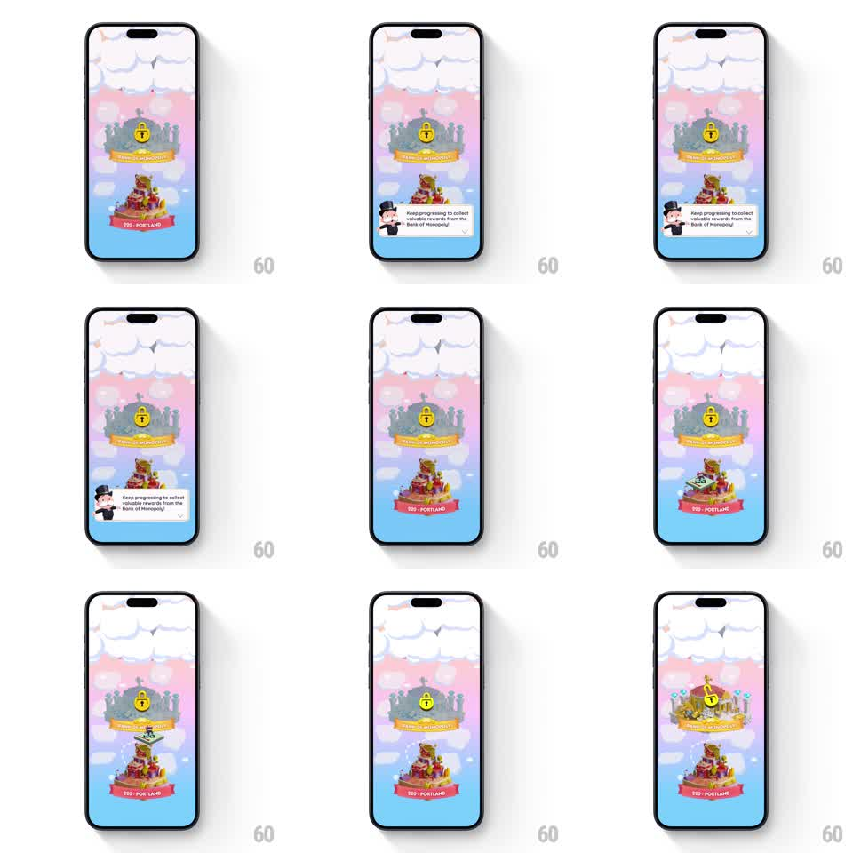

Media
Frame-by-frame

Rebuild this animation 1:1: Monopoly Go's city progression - Mr. Monopoly's tooltip pops in over the map, then the next locked island bursts from greyscale into full color.

Rebuild this animation 1:1: Monopoly Go's city progression - Mr. Monopoly's tooltip pops in over the map, then the next locked island bursts from greyscale into full color.
## Integration
Integration: stack-agnostic spec - springs given as stiffness/damping, timed motions as duration + curve; map every value to your framework and animation library of choice.
## Scene
The pastel-sky map of floating city islands ("PORTLAND" completed in color below, "SHIBUYA" locked in grey above under cloud wisps). Mr. Monopoly appears with a speech bubble: "Keep progressing to collect valuable rewards from the Bank of Monopoly!"
## Motion spec
Pattern: tooltip beat then unlock burst, ~2.5s.
- Mr. Monopoly slides in from the left edge (spring stiffness 320 damping 18) and his speech bubble pops open beside him (scale 0.8 to 1, stiffness 400 damping 16).
- The bubble holds 1.2s, then both exit left (250ms, ease-in).
- The locked island rumbles (+-3px shake, 200ms), its padlock badge flashing, then it bursts into color: saturation sweeps across it (400ms, ease-out), sparkle pops scattering off the rooftops (150ms stagger).
- The island settles with a happy bounce (scale 1 to 1.08 and back, spring stiffness 340 damping 13) as the clouds around it thin.
- The completed island below keeps a gentle idle bob throughout (+-4px, 3s).
## Calibration
- The color sweep travels across the island - it does not fade in uniformly.
- The tooltip sequence is a beat that clears before the unlock begins; they never overlap.
## Reduced motion
Bubble fades in and out; island crossfades to color.
## Don't miss
- The padlock badge flashes just before the burst - it is the trigger beat.
- Clouds part around the unlocked island, not across the whole sky.